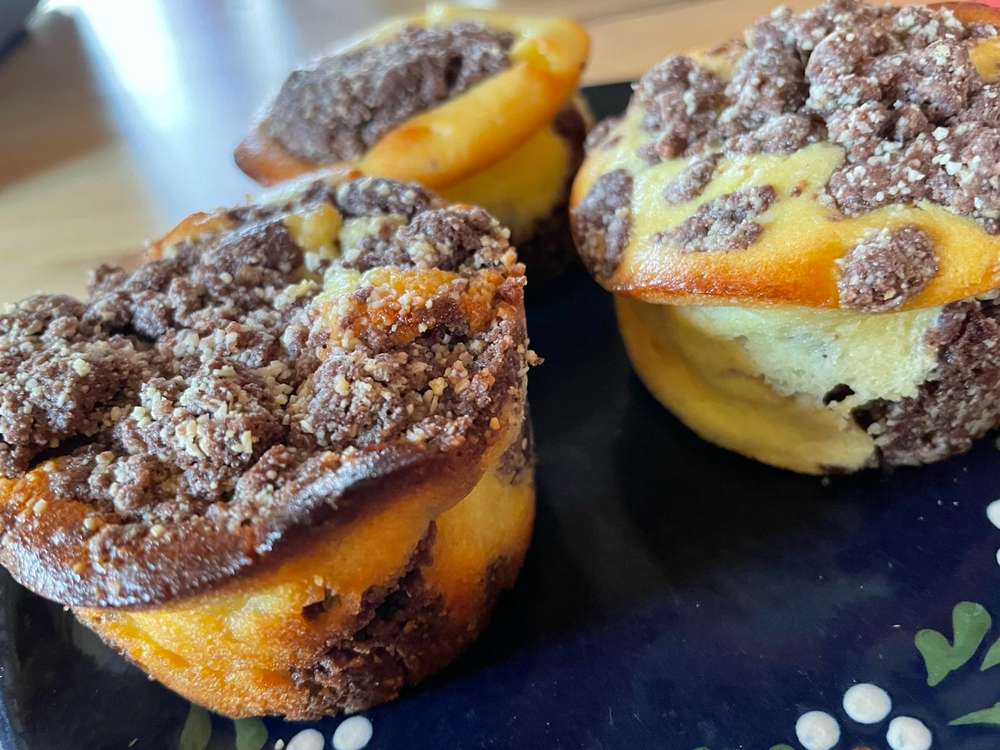

Russische Quarktorte
Ein altes Rezept aus Wolfen abgewandelt von Bieke Meller |

Zutaten für den Teig: |
350g Mehl |
Zutaten für die Füllung: |
125g Butter |
Knetteig machen
Für die Füllung Eiweiß steif schlagen (dann unterheben)
Teig teilen, eine Hälfte in eine Springform geben
Quarkfüllung darauf geben
Die andere Hälfte des Teiges als Streusel darauf verteilen.
Eine Stunde bei 175°C auf mittlerer Schiene backen.
Guten Appetit
Zurück zum Inhaltsverzeichnis